Quem se hospeda no Polinésia usa toda a estrutura de lazer do Samôa Beach Resort: as piscinas, a praia, os jardins e o café da manhã.
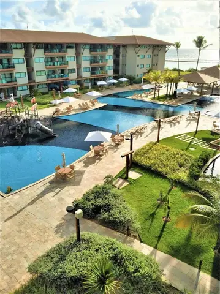
As piscinas vistas do alto
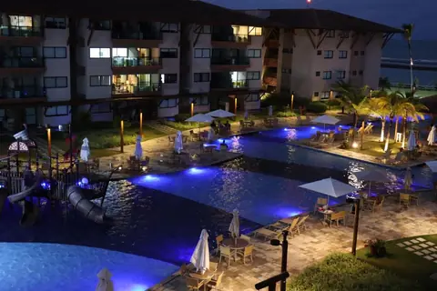
As piscinas iluminadas à noite
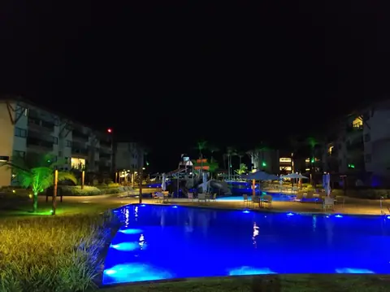
A área de lazer depois que escurece
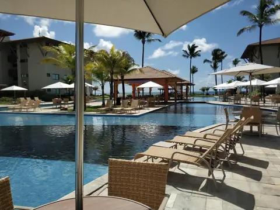
Piscina e quiosque
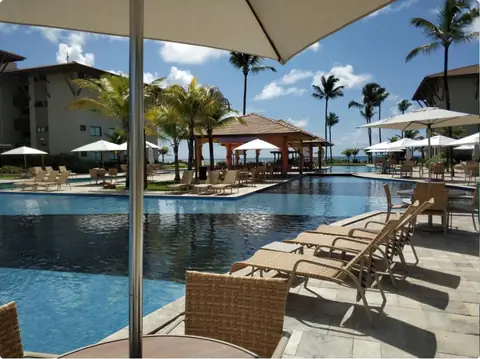
Espreguiçadeiras à beira da piscina
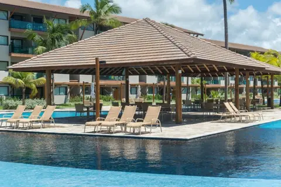
O deck da piscinaPiscina entre os coqueirosA piscina que corre entre os blocos
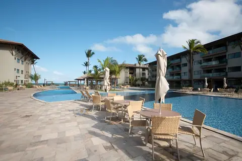
A piscina principal
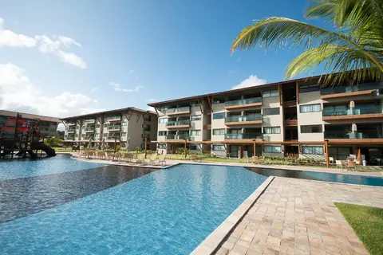
Piscina e jardim
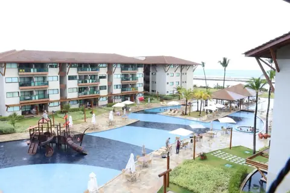
O conjunto das piscinas
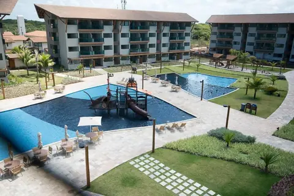
O tobogã visto de cima
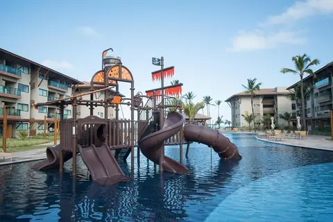
O tobogã infantil
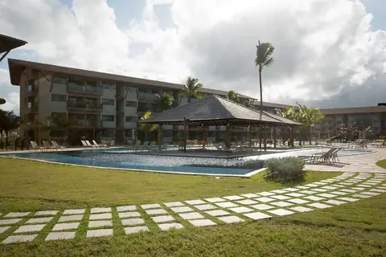
Piscina, gramado e quiosque
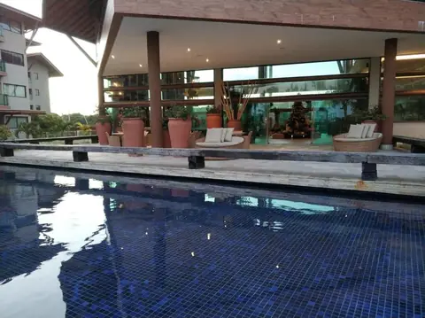
A piscina vista do restauranteA praia em frente ao resortA prainha e as barracas
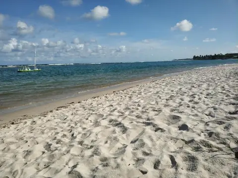
A areia de Muro Alto
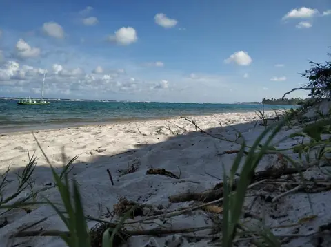
A praia quase deserta
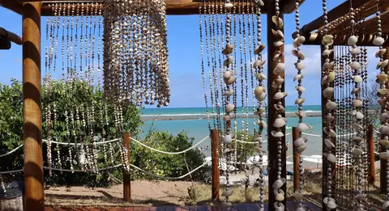
A cabana de conchas, de frente para o marCoqueiros na beira da água
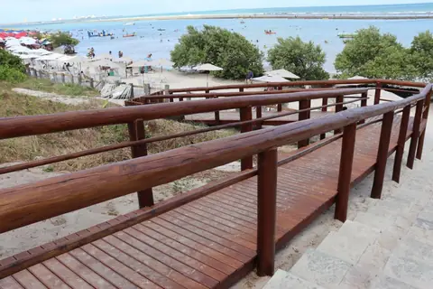
O deck de madeira que leva à praia
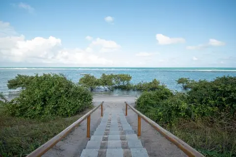
A passarela até o marO encontro do mangue com o mar
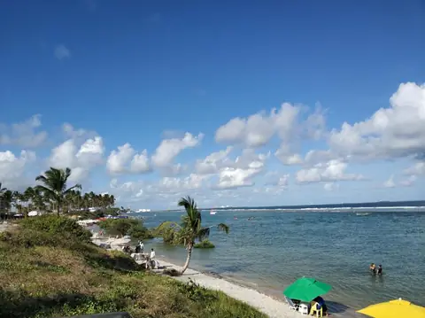
As piscinas naturais
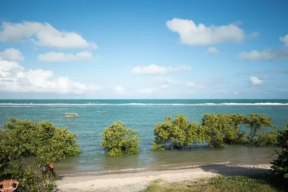
O mar de Muro Alto
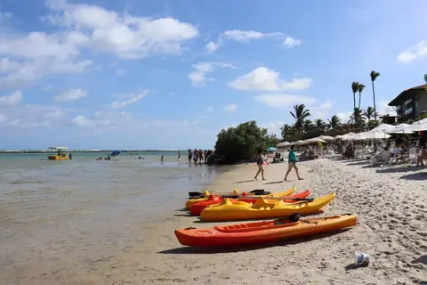
Caiaques na areia
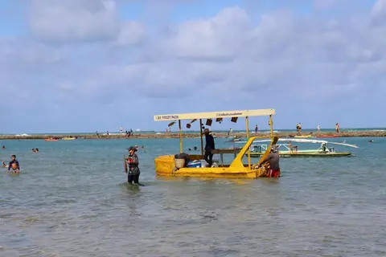
Pedalinho na piscina natural
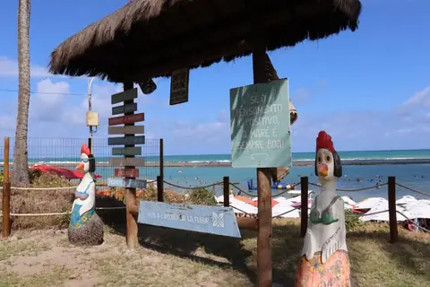
O totem na entrada da praia
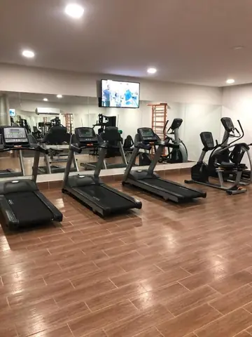
A sala de musculação
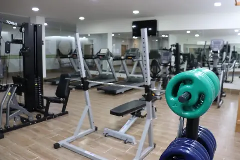
A academia
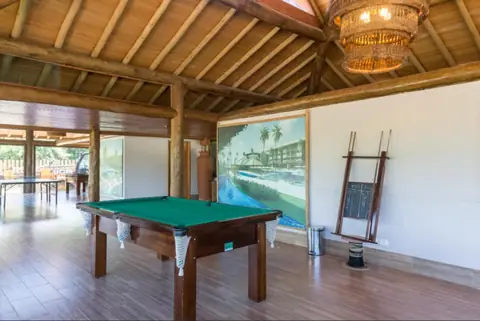
O salão de jogos
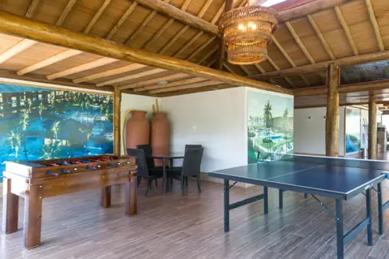
Mesa de ping-pong no salão de jogos
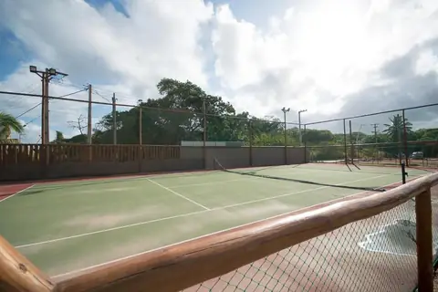
A quadra de tênis
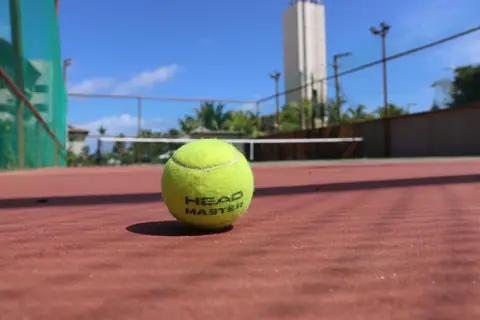
Quadra poliesportiva
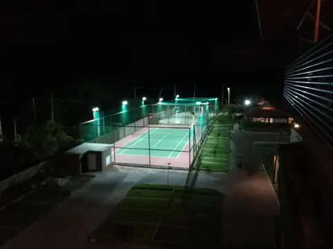
A quadra iluminada à noite
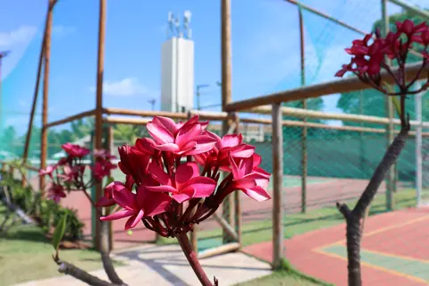
Os jardins junto às quadras
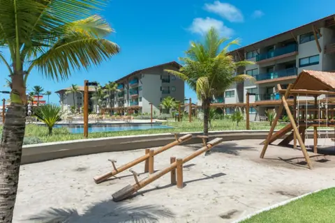
O playground de areia
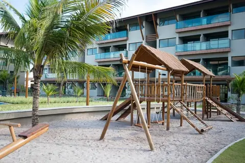
O playground
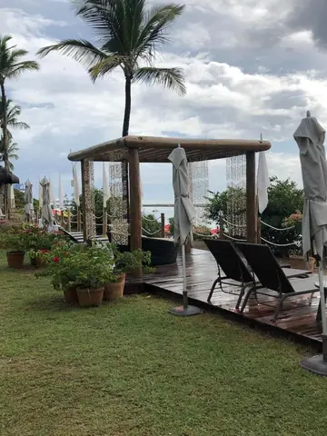
Gazebo com espreguiçadeiras
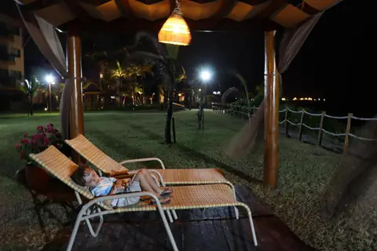
O gramado à noite
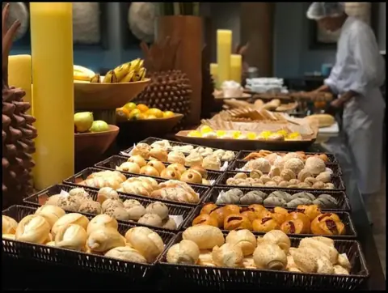
O buffet do café da manhã
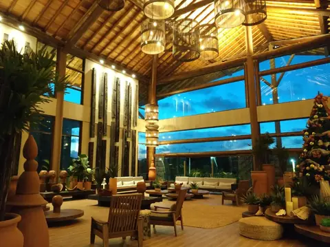
O restaurante, com vista para a piscina
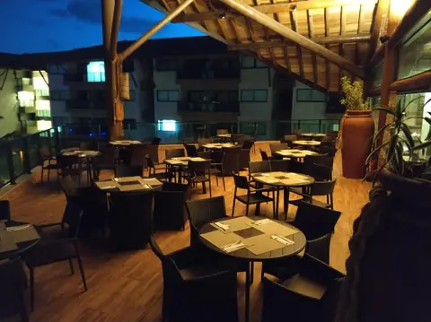
O restaurante à noite
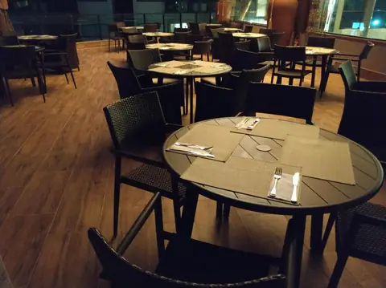
O salão do restaurante
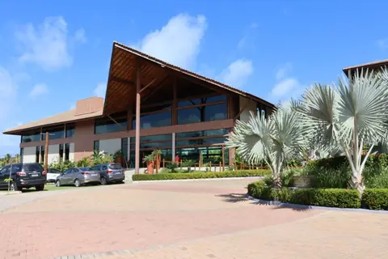
A fachada do restaurante
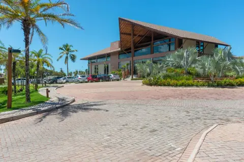
A área de convivência
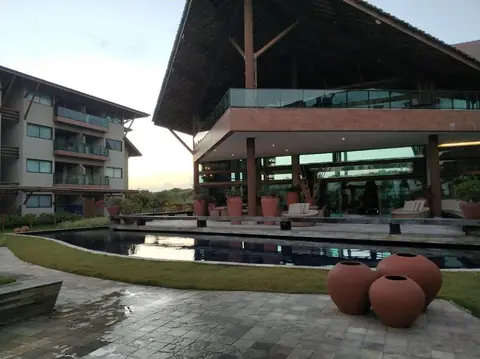
O espelho d’água na entrada do restaurante
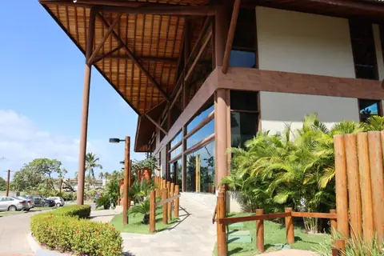
Os quiosques de madeira
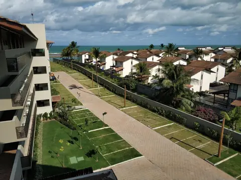
O condomínio visto do alto
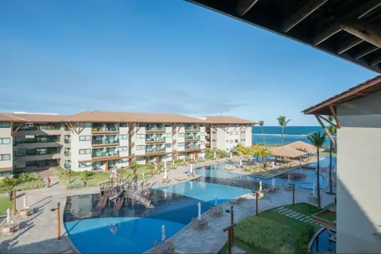
Os blocos e o mar ao fundo
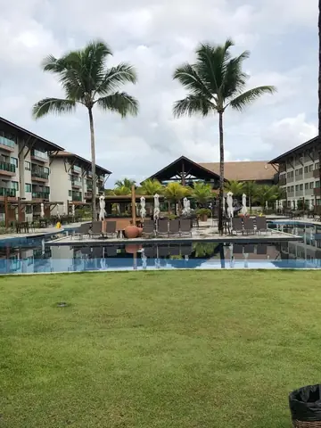
O gramado entre os blocos
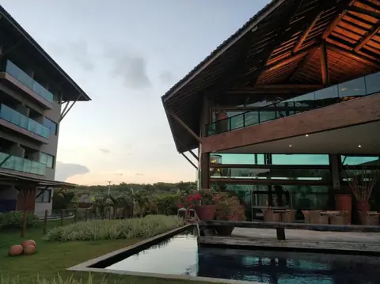
Os blocos por dentro do condomínio
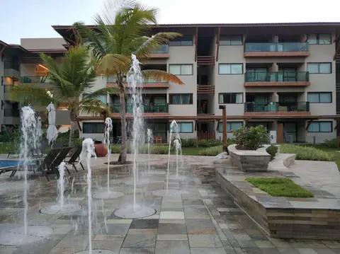
O chafariz
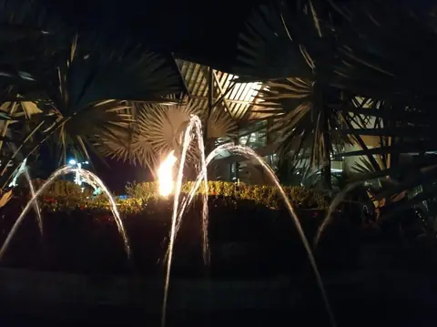
O chafariz iluminado
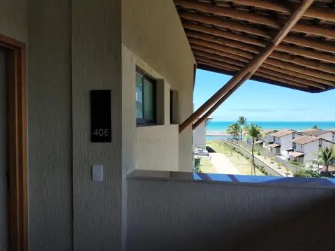
Os elevadores, com vista para o marO estacionamento cobertoA entrada do PolinésiaLa Fleur Polinésia Residence & ResortO acesso ao SamôaNossa cadeira na praia, em frente ao resortAs piscinas ao amanhecerAs piscinas naturais de Muro AltoAs quadras de tênis e poliesportivaO café da manhãA praia de Muro Alto vista do altoCaiaques na praiaA vista da varanda para as piscinasAs piscinas e os jardinsAs piscinas e o playgroundO gramado e os coqueiros à beira-marA praia com a lua sobre o marVista do conjunto do resortAs piscinas vistas da varandaAs piscinas iluminadas de azulA área de lazer à noiteAs piscinas à noite, vistas do altoAs piscinas e o mar ao fundoPiscinas, gramado e coqueirosOs jardins vistos da varandaOs jardins entre os blocosVaranda com vista para o jardimAs piscinas e os jardinsO mar visto da varandaA piscina vista da varandaMesa na varanda, de frente para o marPiscina, praia e marA área de convivênciaA vista da varanda do apartamentoA piscina que corre entre os blocosO mar visto do apartamento
Ficou com alguma dúvida?
Fale com a gente no WhatsApp. Respondemos rápido e sem compromisso.